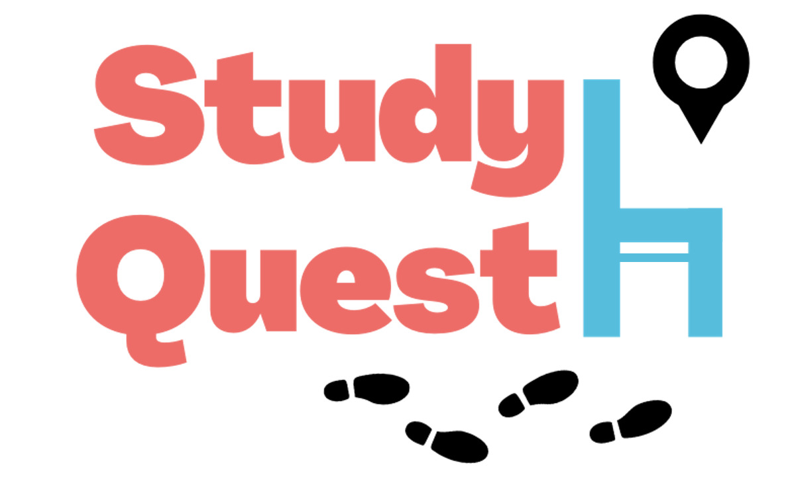

Participated in a case competition held by Wealthsimple. We were tasked with coming up with an innovative solution to encourage and improve financial literacy amongst
the younger demographic specifically Gen-Z. Our solution included stock market simulations and workshops to encourage participants. Our group utilized
G-Suite for documentation and conducted market research to present to our audience.

Researched and created an innovative library solution called StudyQuest. My group and I utilized motion sensors in libraries to showcase empty, preoccupied, and occupied seats via an app.
3-D maps let users know what seats are available for use and gave an option to book seats ahead of time
Implemented a new venture idea called StudyQuest. Utilized G-Suite while researching and presented to a panel of judges.

Replicated logistical functions of Uber in TMUber. Created features for riders and drivers like pickup, dropoff, and transferring rides. Also created features for customers
to order food, dropoff, and wallet balances. Utilized Java for backend functions and utilized important skills like
Object Oriented Principles(OOP), loops, arrays, sets, hashmaps, and treesets.